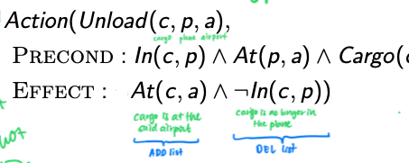

Classical planning (uaing state-space search)
Classical planning agents represent states and their transitions using a factored representation.
AIAMA calls these agents as "planning agents."
A state is represented using a set of state variables or fluents. eg.
{
At(plane1, time1) = True,
At(plane2, time2 = True,
At(plane1, time2 = True
}
Planning becomes a state-space search. Note that states are transformed via operators (actions).
Languages
Languages used in classical planning:
-
PDDL
Domain
💡 "Plan once, run everywhere". A domain is a greater problem, defining the 'world'. In this world, you define entities ("types") like places, vehicles, general objects. You also define yes/no statements ("predicates") in combination with the instances of the types. Lastly, you define the things that you can do ("actions") that can be taken in this world.
-
Requirements
(:requirements :strips :typing) -
Types
(:types city place physobj - object package vehicle - physobj truck airplane - vehicle airport location - place ) -
Predicates
(:predicates (in-city ?loc - place ?city - city) (at ?obj - physobj ?loc - place) (in ?pkg - package ?veh - vehicle)) -
Actions
(:action load-airplane :parameters (?pkg - package ?airplane - airplane ?loc - place) :precondition (and (at ?pkg ?loc) (at ?airplane ?loc)) :effect (and (not (at ?pkg ?loc)) (in ?pkg ?airplane)) ) (:action unload-truck :parameters (?pkg - package ?truck - truck ?loc - place) :precondition (and (at ?truck ?loc) (in ?pkg ?truck)) :effect (and (not (in ?pkg ?truck)) (at ?pkg ?loc)) )
Problem
💡 A problem is a real problem to solve. A real problem is defined by its goal ("goal") and how things are looking currently ("initial state"). You also specify instances of the types ("objects") like "London" if the type is location.
-
Goal
(:goal (and (at p1 north) (at p2 south)) ) -
Initial state
Ground predicates that are positive only
(:init (in-city cdg paris) (in-city lhr london) (in-city north paris) (in-city south paris) (at plane lhr) (at truck cdg) (at p1 lhr) (at p2 lhr) ) -
Objects
(:objects plane - airplane truck - truck cdg lhr - airport south north - location paris london - city p1 p2 - package)
-
-
STRIPS
-
Actions in a state
Action(Load(c,p,a) Precond: At(c,a) ∧ At(p,a) Effect: ¬At(c,a) ∧ ... ) -
Initial state
Init(At(...) ∧ Heigh(...)) -
Goal
Goal(At(...) ∧ Heigh(...))
-
-
SATS
-
Propositionalise the actions
-
Initial state
Instead of
assert every fluent.
-
Propositionalise the goal
-
Add successor-state axioms
-
Add precondition axioms
-
Add action exclusion axioms
-
💡 Why is dropping negative effects (in preconditions) better? It becomes easier to achieve all goal literals because preconditions are easier to meet. It becomes a relaxes problem because a plan in the original problem is also a valid plan in the transformed problem.
ADD list and DEL list

Heuristics
- Ignore delete lists
- Ignore preconditions
- Decompose problem into subproblems
How to reformulate problem
- Create the new type if needed. Eg.
time. - Add predicate to indicate where we are in wrt to the new type. Eg.
at_time(t1). Add predicate to move between the objects (that will always be true). Eg.time_next(t1 t2). - Update actions to include these.
- Create the objects if they don’t already exist. Eg.
t1 t2 t3 - time. - Update the initial state to include rules to guide the planner how to navigate in the search space. Eg.
time_next(t1 t2) time_next(t2 t3)
Algorithms
Forward search
AKA forward state-space search
Examples: Fast Downward
Backward search
AKA backward relevant-states search
"Regression"
Only consider actions that are relevant to the goal or current state.
To regress from goal to a description ,
Boolean satisfiability
NP-complete algorithm
At time step 1, set a set of boolean variables. Through axioms (if the set of bools is like this then go this, else go there), you move to the next step. Repeat until you have all True. The plan is the different sets of bools for each time step. The solution is setting the right actions.
Graphplan
This uses a planning graph data structure. It works only for propositional planning problems (no variables, only literals).
Like the normal graph but include mutually exclusive actions and propositions. Then start searching from the goal.
- Heuristics that can be derived from planning graph:
- 1 goal
- Cost of achieving any goal literal (can be estimated from the level in which it first appears)
- Conjunction of goals
- Max-level (take the max of the levels of the goals)
- Level sum (take the sum of the levels of the goals). Can be inadmissible.
- Set level
- 1 goal